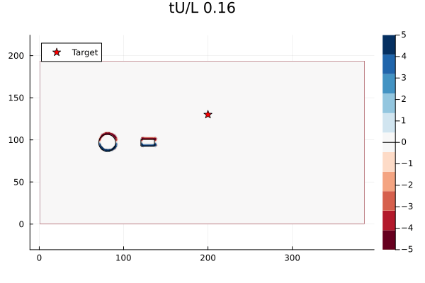

Neural Observer III
基本记录
| 项目 | 记录 |
|---|---|
| 组会题目 | Neural Observer for Stable Control of Uncertain Systems |
| 时间 | 2026-03-14 |
| 关键词 | neural observer, LMI tuning, X-29, Quad-UAV, WaterLily |
Background
无人机、无人车等无人系统常受到传感器白噪声、特殊环境扰动和未建模动态影响。对于物理模型较成熟的扰动，可以直接从动力学角度估计扰动力。对于难以建模的扰动，我在汇报中沿用神经网络观测器来估计状态和扰动。
Neural Lander 的思路是把无人机位姿、速度和控制量作为神经网络输入，拟合未知扰动力，再把估计扰动力用于控制补偿。汇报中记录的问题是：高空场景可能牺牲控制精度，环境变化较大时需要重新采集数据训练。
Problem Statement
神经网络观测器跟踪状态和扰动：
LTI 系统写成：
一般系统写成：
对应观测器为：
稳定性与网络容量
汇报中用 \(V=\eta^\top P\eta\) 构造 Lyapunov 函数，其中 \(P\succ O\)。对于能控能观的带扰动系统，若神经网络观测器参数存在正定对称矩阵 \(P\) 满足 LMI，则有：
当非线性项很小或被删去时，稳定性依赖于具体的 \(A\) 和 \(C\)。如果系统从 \((A,C)\) 变为 \((A',C')\)，原先设计的增益 \(W_{L+2}\) 可能不再合适。我的记录里把这一点和网络容量联系起来：更大的非线性隐藏层有更强的补偿能力。
Training Methods
Point Training 的问题是只能在随机采样点上检查稳定性。LMI Training 的问题是矩阵规模会随着网络层数和神经元数迅速变大。
LMI Tuning 中，若神经网络对输入满足 Lipschitz 条件：
则采样点附近存在稳定半径。把所有采样点对应的球并起来，可以得到稳定区域：
若有界状态空间为 \(\mathcal{X}\)，最后 \(T\) 次采样满足损失小于 \(\epsilon\)，则 \(\mathcal{U}\) 未覆盖整个 \(\mathcal{X}\) 的概率随 \(T\) 增加指数衰减。
Experiments
X-29 Aircraft 实验用于验证 \((A,C)\) 变为 \((A',C')\) 后观测器表现。扰动形式为：
比较对象包括线性观测器、微型 NN、小 NN 和大 NN。汇报中的结论是：大 NN 在较大扰动下仍能保持较小误差，神经网络观测器相较线性方法也有更小实验误差。
Quad-UAV 实验使用四旋翼完整非线性动力学。状态由位置、速度、姿态矩阵和角速度组成：
为了对比 Neural Lander 和 Neural Observer 对扰动的估计效果，实验生成 40000 组数据训练 Neural Lander，并使用扰动补偿：
WaterLily 实验中，固定扰流圆柱位于 \((144,96)\)，直径 20；可控制智能小车长 16、宽 8，初始位置 \((128,96)\)，目标位置 \((200,130)\)。

Conclusion
我的结论记录为：
- 在多个系统中，尤其是非线性模型中，尽量模拟环境扰动进行实验。
- 神经网络观测器能以可移植的方法估计扰动，并给出理论证明。
- 在不同场景对比实验中，神经网络观测器表现出更好的控制效果。